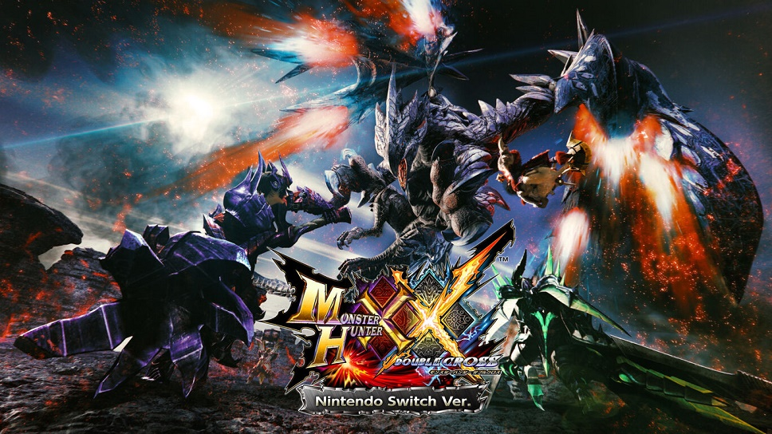

モンスターハンターダブルクロスで改造クエストを作成しよう！

- まず上の画像をクリックして作成ツールをダウンロードしましょう！
- ダウンロードできたらzipファイルを解凍します。
- 中にあるQuest_Construct.exeを実行しましょう
- クエストリストフォルダに入っている好きなクエストファイルを選びましょう。
- 選んだクエストファイルをさっき起動したQuest_ConstructにD&D(ドラッグアンドドロップ)します。
- 解凍されたクエストフォルダーはquest_openというフォルダーに保存されます。
- つぎにQuedixx.exeを実行します。
- quest_openの中の先ほど解凍したフォルダーをフォルダーごとQuedixxにD&Dします。
- あとは好きなようにいじっていきますが次のことに注意しないとすぐにエラーを吐きます
１・クエストIDを弄らない
クエストIDが整合されていないと必ずエラーになります。
２・エリアを変更する際は座標に注意
行き先やエリア番号を変更するとモンスターが範囲外に行く可能性があります。
３・G級クエストは変更できない
下位・上位のイベントクエストしか作れません
４・クエストの種類を間違えない
大連続にしようとして5体用意しても種類が狩猟などになっていたら出現しません
５・特殊なクエストのモンスター
ラオシャンロンは砦以外では動けません。また、一体だけにしましょう
クエスト自体が特殊だからイベントクエストのラオをベースに弄る必要あり
アトラルカは形態変化するためアトラルカ(58)と不明(57)を一緒に入れる必要あり
不明(57)は保存するときに消えるのでバイナリエディタで直接書き換える
また、最初に同時に出現させる必要があります。また、倒しても倒した判定になりません
極端にモンスターのサイズを変更しない
10%～500%ぐらいにしておきましょう
- いじったら・ファイル→全て上書き保存・をして終了しましょう。
- 保存する際に勝手に一人限定になるのでバイナリエディタで書きかえます。
- String(バイナリエディタ)
- questdata....mibというファイルをStringにDDして
- 0000001Aが2Fになっているので0や0Dなどにしましょう
- 保存したら....bakというファイルはいらないので消しておきます
- 最後にQuest_ConstructにクエストフォルダをフォルダごとDDすると圧縮されてquestフォルダーに保存されます
3DSに入れていく！
- 圧縮したarcクエストファイルを・3dsに入れるもの＞mhxx_data_manager＞quest＞mhxx
- に入れます。mhxx_data_managerというフォルダーごとSDカードの3dsファイルに入れればPCの作業は終了！
- SDカードを3dsに戻してHomeBrewLauncherでmhxx data managerを起動!
- import ＞ quests ＞ mhxxを選択し、実行！
- これで改造クエストがMHXXにインポートされました。
- お疲れ様でした。